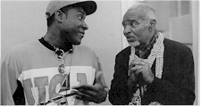
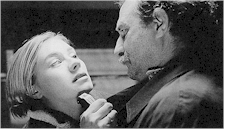

Contents | Features | Reviews | News | Archives | Store

Contents | Features | Reviews | News | Archives | Store
 |
25th Seattle
International |
Films Caught ...
Posted 18 June 1999
Autumn Tale (Conte D’Automne, France, 1998, 110 minutes)
 Appropriately
refocusing his sublime storytelling talents on the matchmaking efforts undertaken by a
group of 40-somethings in the Ardeche, Drome and Vaucluse regions of the Rhone Valley,
French master Eric Rohmer's first movie since 1996's teen romance A Summer Tale
(itself never properly distributed in the United States) concludes his quartet of films
named for the seasons that began with 1989's A Tale of Springtime and continued
with A Tale of Winter in 1992. Lifelong best friends Magali (Beatrice Romand, Laura
in Claire's Knee) and Isabelle (Marie Riviere, who had a small part in Perceval)
find very different paths to love when the latter, secretly screening lonelyhearts
candidates for the former, falls for the suave Gerald (Alain Libolt). Meanwhile, Magali's
son's boyfriend Rosine (Alexia Portal) has her own ideas. Those new to Rohmer are urged
not to miss this witty, literate film, while those who cherish the insightful, soothing,
poetic realism of the filmmaker's magnificent oeuvre are already in line ahead of you
(that is, if they haven't already moved to Avignon). [Click
here to read the full review]
Appropriately
refocusing his sublime storytelling talents on the matchmaking efforts undertaken by a
group of 40-somethings in the Ardeche, Drome and Vaucluse regions of the Rhone Valley,
French master Eric Rohmer's first movie since 1996's teen romance A Summer Tale
(itself never properly distributed in the United States) concludes his quartet of films
named for the seasons that began with 1989's A Tale of Springtime and continued
with A Tale of Winter in 1992. Lifelong best friends Magali (Beatrice Romand, Laura
in Claire's Knee) and Isabelle (Marie Riviere, who had a small part in Perceval)
find very different paths to love when the latter, secretly screening lonelyhearts
candidates for the former, falls for the suave Gerald (Alain Libolt). Meanwhile, Magali's
son's boyfriend Rosine (Alexia Portal) has her own ideas. Those new to Rohmer are urged
not to miss this witty, literate film, while those who cherish the insightful, soothing,
poetic realism of the filmmaker's magnificent oeuvre are already in line ahead of you
(that is, if they haven't already moved to Avignon). [Click
here to read the full review]
The Basement and the Kitchen (USA, 1999, 102 minutes)
There’s no need to look into this basement. One of the ten new films in juried
competition for the American Independent Award, this debut from writer-director-actor
David Fickas finds the young auteur in way over his head.  An interesting
writer and a passable director (on a budget so low the sets occasionally shake with the
exertion of the action), Frickas’ crucial mistake was in casting himself as Lloyd
Proffit, an intolerably whiny and self-absorbed 20-year-old who is so convinced of a
government plot against him that he refuses to come out of the cellar. For the first
half-hour or so the film stays there too, and it looks as if it’ll never come out
either. Finally, in the movie’s one genuinely interesting Truman Show-inspired
twist, events among a group in the kitchen reveal that maybe Lloyd was right to be
paranoid. Comedienne Mo Gaffney is passable as Lloyd’s "Mom" (ironically,
she was also in the Jim Carrey movie), but what little emotive energy the movie manages to
generate comes from an actor named Luiggi Debiasse as a mercurial computer operator. To
reveal more would spoil whatever surprise is possible after the initial 30 minutes, but
suffice it to say that the film’s twist is more than offset by a style best described
as "primitive."
An interesting
writer and a passable director (on a budget so low the sets occasionally shake with the
exertion of the action), Frickas’ crucial mistake was in casting himself as Lloyd
Proffit, an intolerably whiny and self-absorbed 20-year-old who is so convinced of a
government plot against him that he refuses to come out of the cellar. For the first
half-hour or so the film stays there too, and it looks as if it’ll never come out
either. Finally, in the movie’s one genuinely interesting Truman Show-inspired
twist, events among a group in the kitchen reveal that maybe Lloyd was right to be
paranoid. Comedienne Mo Gaffney is passable as Lloyd’s "Mom" (ironically,
she was also in the Jim Carrey movie), but what little emotive energy the movie manages to
generate comes from an actor named Luiggi Debiasse as a mercurial computer operator. To
reveal more would spoil whatever surprise is possible after the initial 30 minutes, but
suffice it to say that the film’s twist is more than offset by a style best described
as "primitive."
Besieged (L’Assedio, Italy, 1998, 93 minutes)
Since his 1987 epic The Last Emperor won nine Oscars (including Best Picture,
Best Director and Best Adapted Screenplay), Bernardo Bertolucci has favored epic sweep
over the politically-charged intimacy of his early work -- a shift that has proved as
controversial among the critical intelligentsia as it was undoubtedly profitable for the
director.  Now, after the transitional feel of Stealing Beauty, Bertolucci
has once again polarized the critics, and he’s done it, ironically, with this
intimate chamber drama, expanded from its origins as a one-hour production for Italian
television. In an antique-stuffed house on a side street in Rome, reclusive
pianist-composer Jason Kinsky (David Thewlis eccentric even for him) rents his basement
room to Shandurai (luminous Thandie Newton), a political refugee studying medicine. These
two exiles couldn’t be more different, yet his sudden declaration of love and her
seemingly impossible condition for its implied consummation spark a series of provocative
and metaphor-laden confrontations. As this tumultuous century draws to a close, one of
Italy’s most vital filmmakers returns from his own exile, an artist at once
transformed and refocused.
Now, after the transitional feel of Stealing Beauty, Bertolucci
has once again polarized the critics, and he’s done it, ironically, with this
intimate chamber drama, expanded from its origins as a one-hour production for Italian
television. In an antique-stuffed house on a side street in Rome, reclusive
pianist-composer Jason Kinsky (David Thewlis eccentric even for him) rents his basement
room to Shandurai (luminous Thandie Newton), a political refugee studying medicine. These
two exiles couldn’t be more different, yet his sudden declaration of love and her
seemingly impossible condition for its implied consummation spark a series of provocative
and metaphor-laden confrontations. As this tumultuous century draws to a close, one of
Italy’s most vital filmmakers returns from his own exile, an artist at once
transformed and refocused.
The Children of Chabannes (USA, 1999, 92 minutes)
 As research on the Holocaust accelerates, films on the subject move
away from the camps themselves to tell inspiring regional stories. During the years 1939
to 1943, Jewish children, age 2 to 17, from Germany, Austria, Poland and even elsewhere in
France, were sent to a converted chateau in the remote southern agricultural village of
Chabannes, one of 15 such refuges run by OSE, the Jewish social service and health care
organization. There, under the rallying cry of "reflechit, travaille,
s’amuse!" ("thinking, working, having fun!") the children were
shielded and taught by a remarkable group of brave instructors -- one of whom remembers
receiving the following advice: "There are enough engineers, but there are no Jewish
gym teachers in France." Co-director Lisa Gossels’ father is one of the many
surviving children of Chabannes interviewed during a 1996 reunion, supplemented by
remarkably vibrant photographs and drawings from a 170-page journal they created in 1942.
"I prefer to live like this and be stronger than they are," one remembers
telling a fearful playmate. And so they did, and so they are.
As research on the Holocaust accelerates, films on the subject move
away from the camps themselves to tell inspiring regional stories. During the years 1939
to 1943, Jewish children, age 2 to 17, from Germany, Austria, Poland and even elsewhere in
France, were sent to a converted chateau in the remote southern agricultural village of
Chabannes, one of 15 such refuges run by OSE, the Jewish social service and health care
organization. There, under the rallying cry of "reflechit, travaille,
s’amuse!" ("thinking, working, having fun!") the children were
shielded and taught by a remarkable group of brave instructors -- one of whom remembers
receiving the following advice: "There are enough engineers, but there are no Jewish
gym teachers in France." Co-director Lisa Gossels’ father is one of the many
surviving children of Chabannes interviewed during a 1996 reunion, supplemented by
remarkably vibrant photographs and drawings from a 170-page journal they created in 1942.
"I prefer to live like this and be stronger than they are," one remembers
telling a fearful playmate. And so they did, and so they are.
Creature (USA, 1999, 64 minutes)
Parris Patton is a New Jersey native who, after stints as the head of film production
for Prince’s Paisley Park Studios and director of concert films and music videos,
moved to Los Angeles and took up residence near an intersection known as
"transvestite hooker central" (actually Santa Monica Boulevard and La Brea
Avenue).  One evening his curiosity got the better of him and he wandered over with a
small film crew. Out of a chance introduction to Stacey "Hollywood" Dean,
Creature was born. A North Carolina refugee, Stacey was born Kyle Dean but fled his rural
family and the nickname of the title for regional fame as one of the flamboyant stars of
Club Arena in Hollywood. Not exactly a transvestite, Stacey is more what is becoming known
as transgendered, a biological man who lives as a woman and is taking hormones to develop
breasts. For the next four years Patton followed Stacey’s progress, culminating in a
visit home to visit a forgiving mother and befuddled father. For the purposes of
documentary Stacey is a satisfyingly conflicted creature whose steely and honest resolve
is tempered by a somewhat obnoxious personality. Creature is culled from 40 hours of
footage, and, at 64 minutes is what Patton calls "when it was done." This is a
refreshing perspective that has resulted in a movie both pithy and involving.
One evening his curiosity got the better of him and he wandered over with a
small film crew. Out of a chance introduction to Stacey "Hollywood" Dean,
Creature was born. A North Carolina refugee, Stacey was born Kyle Dean but fled his rural
family and the nickname of the title for regional fame as one of the flamboyant stars of
Club Arena in Hollywood. Not exactly a transvestite, Stacey is more what is becoming known
as transgendered, a biological man who lives as a woman and is taking hormones to develop
breasts. For the next four years Patton followed Stacey’s progress, culminating in a
visit home to visit a forgiving mother and befuddled father. For the purposes of
documentary Stacey is a satisfyingly conflicted creature whose steely and honest resolve
is tempered by a somewhat obnoxious personality. Creature is culled from 40 hours of
footage, and, at 64 minutes is what Patton calls "when it was done." This is a
refreshing perspective that has resulted in a movie both pithy and involving.
Dance of Dust (Iran, 1992-1998, 73 minutes)
 Filmed
in 1992 but shelved until 1998 due to scenes showing the dismantling of religious icons,
the nearly wordless Dance of Dust is full of wondrous, sinister, vaguely threatening
imagery that will haunt the viewer for days. At a windswept, remote Iranian brickworks,
the wild-eyed and solitary young Ilia is drawn to Limua, daughter of a seasonal worker.
When the coming of rain marks the end of the brickmaking cycle, Limua presents Ilia with
an imprint of her hand in a brick. Distraught over her leaving, the boy throws the brick
into a well and destroys a religious relic. Referred to by writer-director-editor Abolfazl
Jalili as "the only film I love," Dance of Dust is chockablock with poetic
sounds and images, from the hypnotically whispering wind and the brick furnace with a
heartbeat to a floor full of babies, a toothsome local madman and the blue dust which
transforms everyone into the ghostly living dead. The film is open to myriad
interpretations, and once seen will not be soon forgotten.
Filmed
in 1992 but shelved until 1998 due to scenes showing the dismantling of religious icons,
the nearly wordless Dance of Dust is full of wondrous, sinister, vaguely threatening
imagery that will haunt the viewer for days. At a windswept, remote Iranian brickworks,
the wild-eyed and solitary young Ilia is drawn to Limua, daughter of a seasonal worker.
When the coming of rain marks the end of the brickmaking cycle, Limua presents Ilia with
an imprint of her hand in a brick. Distraught over her leaving, the boy throws the brick
into a well and destroys a religious relic. Referred to by writer-director-editor Abolfazl
Jalili as "the only film I love," Dance of Dust is chockablock with poetic
sounds and images, from the hypnotically whispering wind and the brick furnace with a
heartbeat to a floor full of babies, a toothsome local madman and the blue dust which
transforms everyone into the ghostly living dead. The film is open to myriad
interpretations, and once seen will not be soon forgotten.
Day of the Full Moon
(Dyen polnoluniya,
Russia, 1998, 93 minutes)
Winner of a Special Mention FIPRESCI award from a jury of international film critics at
the 1998 Karlovy Vary festival, Day of the Full Moon is a stunningly photographed
series of vignettes from Russia past and present that summons the spirit of Max Ophuls'
1950 classic La Ronde,  Robert Altman's American landmarks Nashville
and Short Cuts as well as the time-shifting strategies of Alain Resnais (Mon
Oncle d'Amerique, Same Old Song) to tell provocative and interconnecting
stories illustrating the waltz of years and whim of memory. In 1948, three people -- a
young man, a boy and a waiter -- are captivated during the full moon by a mysterious woman
in a lilac dress. Like stones in a pond, the effects of this event ripple through the
years, and grow to wash over more than 80 characters, from a disc jockey to a fairy
princess to a gangster to Alexander Pushkin to a nostalgic dog. But which of these are
dreams, and which represent reality? Director Karen Shakhnazarov continues his career-long
focus and the intersection of past and present with this mysterious yet exhilirating
mosaic of humankind, which in the end offers both seduction and satisfaction to the
receptive viewer.
Robert Altman's American landmarks Nashville
and Short Cuts as well as the time-shifting strategies of Alain Resnais (Mon
Oncle d'Amerique, Same Old Song) to tell provocative and interconnecting
stories illustrating the waltz of years and whim of memory. In 1948, three people -- a
young man, a boy and a waiter -- are captivated during the full moon by a mysterious woman
in a lilac dress. Like stones in a pond, the effects of this event ripple through the
years, and grow to wash over more than 80 characters, from a disc jockey to a fairy
princess to a gangster to Alexander Pushkin to a nostalgic dog. But which of these are
dreams, and which represent reality? Director Karen Shakhnazarov continues his career-long
focus and the intersection of past and present with this mysterious yet exhilirating
mosaic of humankind, which in the end offers both seduction and satisfaction to the
receptive viewer.
Dead Dogs (USA, 1999, 90 minutes)
 This
provocative and focused low-budget thriller won the American Independent Award for best,
uh, American independent film, and for good reason: at once a modestly original meditation
on sibling rivalry gone awry and a crafty tribute to the kinds of 1940s and 1950s B-movies
that usually found the likes of Robert Mitchum getting worked over by shifty colleagues
and deceptive dames, the movie has a remarkably consistent look and tone for a film made
on a budget so low the screenwriter is listed as one of three caterers. On the overnight
shift of the morgue-quiet and apparently remote Driftwood Inn, perpetually pensive
security guard Tom Kale (first-time actor and Noah Wyle lookalike Joe Reynolds) splits his
time between an ongoing affair with married maid Diane (Suzanne Carney) and
chess’n’chatter with desk clerk Gordon (John Durbin). This desultory existence
is interrupted and forever changed by the arrival of Tom’s brother Derek (Jay
Underwood), a swaggering, homesick petty thief with his sibling’s former girl Carmen
(Margot Demeter) in tow. The pair cause Tom to at once come alive with hope and sink into
since-discarded bad habits, resulting in an ill-advised caper that goes inevitably very
wrong. Montana native Clay Eide has his material, cast and crew working in pleasing
unison, with uniformly good acting of a rumination-filled script sublimely enhanced by
cinematographer Don Devine’s hand-held black and white photography and a nicely
textured score by Alan Koshiyama. While not meaning to damn with overpraise, the dearth of
mature Amerindie product of late makes Dead Dogs a regionally produced phenomena to
watch.
This
provocative and focused low-budget thriller won the American Independent Award for best,
uh, American independent film, and for good reason: at once a modestly original meditation
on sibling rivalry gone awry and a crafty tribute to the kinds of 1940s and 1950s B-movies
that usually found the likes of Robert Mitchum getting worked over by shifty colleagues
and deceptive dames, the movie has a remarkably consistent look and tone for a film made
on a budget so low the screenwriter is listed as one of three caterers. On the overnight
shift of the morgue-quiet and apparently remote Driftwood Inn, perpetually pensive
security guard Tom Kale (first-time actor and Noah Wyle lookalike Joe Reynolds) splits his
time between an ongoing affair with married maid Diane (Suzanne Carney) and
chess’n’chatter with desk clerk Gordon (John Durbin). This desultory existence
is interrupted and forever changed by the arrival of Tom’s brother Derek (Jay
Underwood), a swaggering, homesick petty thief with his sibling’s former girl Carmen
(Margot Demeter) in tow. The pair cause Tom to at once come alive with hope and sink into
since-discarded bad habits, resulting in an ill-advised caper that goes inevitably very
wrong. Montana native Clay Eide has his material, cast and crew working in pleasing
unison, with uniformly good acting of a rumination-filled script sublimely enhanced by
cinematographer Don Devine’s hand-held black and white photography and a nicely
textured score by Alan Koshiyama. While not meaning to damn with overpraise, the dearth of
mature Amerindie product of late makes Dead Dogs a regionally produced phenomena to
watch.
Divine
(El Evangelio de las Maravillas,
Mexico/Argentina/Spain,
1998, 112 minutes)
"Someday," wrote Luis Bunuel of his one-time assistant, "I will make a
quote about Arturo Ripstein that will make mysteries tremble."  Among the
world’s most gifted and important filmmakers , Ripstein has made his most audacious,
provocative and Bunuelian movie yet. In the shadowy fantasy world of New Jerusalem -- as
if the sets and extras of a 1950s Hollywood biblical epic had been pressed into service
for a mammoth yard sale -- Mama Dorita (Katy Jurado), who cheats at dominos, and the
tippling, movie-mad Papa Basilio (Francisco Rabal), preside over their "fish,"
societal outcasts who have been drawn to their millennial mishmash of rituals and fetishes
from various religions peppered with stuff they’ve just made up ("electricity is
the throat of God," says Papa, snatching away a new recruit’s Walkman).
Apparently based on an actual Mexican sect of the 1970s, New Jerusalem was, wrote Ripstein
and long-time collaborator Alicia Paz Garciadiego, "a utopia ideal for the dissection
by the surgical knife of the film camera." The operation is a success: trembling with
mystery, Divine is an unclassifiable triumph.
Among the
world’s most gifted and important filmmakers , Ripstein has made his most audacious,
provocative and Bunuelian movie yet. In the shadowy fantasy world of New Jerusalem -- as
if the sets and extras of a 1950s Hollywood biblical epic had been pressed into service
for a mammoth yard sale -- Mama Dorita (Katy Jurado), who cheats at dominos, and the
tippling, movie-mad Papa Basilio (Francisco Rabal), preside over their "fish,"
societal outcasts who have been drawn to their millennial mishmash of rituals and fetishes
from various religions peppered with stuff they’ve just made up ("electricity is
the throat of God," says Papa, snatching away a new recruit’s Walkman).
Apparently based on an actual Mexican sect of the 1970s, New Jerusalem was, wrote Ripstein
and long-time collaborator Alicia Paz Garciadiego, "a utopia ideal for the dissection
by the surgical knife of the film camera." The operation is a success: trembling with
mystery, Divine is an unclassifiable triumph.
Final Rinse (USA, 1999, 92 minutes)
Erratic but genial, Final Rinse is an effort to marry the cheerful stupidity of
modern American screen comedy to a kind of benevolent eccentricity: think Naked Gun
directed by John Waters.  An actor named Terence Goodman plays Manhattan detective Max Block
as a demented blend of William Shatner and Mr. Peterman in his quest for the madman who is
killing downtown rockers and cutting their hair (a tonsoriallectomy?). While full of
steely resolve, Block is constantly threatened with tackles in the form of a green young
partner, grumpy chief (Batman’s original Riddler, Frank Gorshin) and a truly funny
backstory that finds him fighting off the pharmaceutical residue of life as a 1960s
radical. The film is full of off-the-wall cameos, including turns by John Fugelsang,
Sebastian Bach, "Uncle Floyd" Vivino and Joey Ramone. If you don’t know who
those people are you probably won’t fall under the goofy but pokey spell of this
movie, which sports as an idea of fun a tongue-twisting script composed in large part of
fragments of rock song titles and lyrics. Sometimes this plays as funny as it sounds,
sometimes it doesn’t.
An actor named Terence Goodman plays Manhattan detective Max Block
as a demented blend of William Shatner and Mr. Peterman in his quest for the madman who is
killing downtown rockers and cutting their hair (a tonsoriallectomy?). While full of
steely resolve, Block is constantly threatened with tackles in the form of a green young
partner, grumpy chief (Batman’s original Riddler, Frank Gorshin) and a truly funny
backstory that finds him fighting off the pharmaceutical residue of life as a 1960s
radical. The film is full of off-the-wall cameos, including turns by John Fugelsang,
Sebastian Bach, "Uncle Floyd" Vivino and Joey Ramone. If you don’t know who
those people are you probably won’t fall under the goofy but pokey spell of this
movie, which sports as an idea of fun a tongue-twisting script composed in large part of
fragments of rock song titles and lyrics. Sometimes this plays as funny as it sounds,
sometimes it doesn’t.
Following (UK, 1998, 70 minutes)
 Winner
of the Tiger Award at this year’s Rotterdam festival and featured in New York’s
New Directors/New Films program, this notable feature debut is reminiscent of the recent
caper movies The Usual Suspects and The Spanish Prisoner, but with a
moodier, more intimate feel. Would-be writer Bill (co-producer Jeremy Theobald), possessed
of an odd compulsion to follow complete strangers, finds his actions have a sinister
ripple effect when one of his targets, urbane petty thief Cobb (Alex Haw), leads him into
a dangerous game of robbing flats while the owners are away. Add a mysterious woman and
more twists than the crooked streets and rooftops of London where the drama unfolds, and
the result is a complex and provocative film about the mysteries of personal space and the
tragic consequences of deceit and treachery. "Everybody has a box," Cobb says of
the most private places where people keep their valuables, but he’s also referring to
those odd impulses within all of us that can only lead to trouble.
Winner
of the Tiger Award at this year’s Rotterdam festival and featured in New York’s
New Directors/New Films program, this notable feature debut is reminiscent of the recent
caper movies The Usual Suspects and The Spanish Prisoner, but with a
moodier, more intimate feel. Would-be writer Bill (co-producer Jeremy Theobald), possessed
of an odd compulsion to follow complete strangers, finds his actions have a sinister
ripple effect when one of his targets, urbane petty thief Cobb (Alex Haw), leads him into
a dangerous game of robbing flats while the owners are away. Add a mysterious woman and
more twists than the crooked streets and rooftops of London where the drama unfolds, and
the result is a complex and provocative film about the mysteries of personal space and the
tragic consequences of deceit and treachery. "Everybody has a box," Cobb says of
the most private places where people keep their valuables, but he’s also referring to
those odd impulses within all of us that can only lead to trouble.
I.D.
(Pieces d’identites, Belgium/France/The Congo,
1998, 96 minutes)
Steeped in tradition and decked out in the regal trappings of his coronation -- the "identity pieces" of the movie’s original title that he wears over a sober business suit -- Mani Kongo, King of the Bakongo (Gerard Essomba, himself the grandson of a king) returns to Brussels in search of the daughter he left behind to pursue her studies on a brief visit long ago. Unbeknownst to his highness, she’s been in prison but is now dating the taxi driver who picks him up at the airport -- one of many implausible but charming coincidences in this refreshing comic roundelay. Making a belated but assured return to features since writing and co-directing La vie est belle with Benoit Lamy in 1987, Congolese filmmaker Mweze Ngangura’s sophomore effort was seven years in the making, rich in multileveled meaning as it flawlessly navigates provocative points of racism, tradition, class struggles, cultural identity and corruption without trivializing the royal pain or sacrificing the substantial entertainment value. That’s musician Papa Wemba, star of La vie est belle, performing his own title tune at the climactic party.
The Last Best Sunday (USA, 1999, 101 minutes)
Anchored by an extraordinary leading performance from actress Angela Bettis as a young
woman from a repressed religious family who finds love and adventure without leaving the
house, this exciting and surprisingly sophisticated directorial debut from "Happy
Days" actor Don Most (he played Ralph Malph) manages to overcome an underwritten
subplot and unnecessary third act padding to emerge as an involving drama that subverts
the cliches inherent in its story.  Bettis shines as Lolly
Ann, who is left to her own devices over a weekend when her fundamentalist parents travel
out of town. While this is happening, young Mexican dishwasher Joseph (Douglas Spain), on
the run from a rash act of shocking violence in retribution for his treatment at the hands
of a couple of crachers, breaks into Lolly Ann’s house to avoid capture by the local
sheriff (William Lucking), who has only until Monday morning before giving up his job to
newly-elected deputy Craig Wasson. At this point Karen Kelly’s script shines, as the
two young people from entirely different worlds bring a fresh spin to an overused
situation. Bettis in particular is hypnotically intense, commanding center stage with a
series of revelatory monologues. It is only later in the movie, as the sheriff’s
search brings him closer to his prey and the new lovers make a break for freedom, that the
movie loses its way. Until then, The Last Best Sunday is something special, a
familiar story given new life by a director who has clearly embraced television’s
often misunderstood and underused knack for combining drama and comedy.
Bettis shines as Lolly
Ann, who is left to her own devices over a weekend when her fundamentalist parents travel
out of town. While this is happening, young Mexican dishwasher Joseph (Douglas Spain), on
the run from a rash act of shocking violence in retribution for his treatment at the hands
of a couple of crachers, breaks into Lolly Ann’s house to avoid capture by the local
sheriff (William Lucking), who has only until Monday morning before giving up his job to
newly-elected deputy Craig Wasson. At this point Karen Kelly’s script shines, as the
two young people from entirely different worlds bring a fresh spin to an overused
situation. Bettis in particular is hypnotically intense, commanding center stage with a
series of revelatory monologues. It is only later in the movie, as the sheriff’s
search brings him closer to his prey and the new lovers make a break for freedom, that the
movie loses its way. Until then, The Last Best Sunday is something special, a
familiar story given new life by a director who has clearly embraced television’s
often misunderstood and underused knack for combining drama and comedy.
Love Happens (USA, 1999, 88 minutes)
 More
of a substandard TV movie than an involving feature, this grating comedy manages to misuse
the talents of both Megyn Price (late of the late "Lateline") and "The Drew
Carey Show"’s Jenica Bergere as a spunky Los Angeles single with a fear of
commitment and the eccentric gal pal who cheers her on in a hesitant relationship with
good-looking carpenter Mike (Ken Marino). This is the kind of whiny, smug Amerindie that
gives the movement a bad name, a pat, unfunny comedy with more production values than
brains. A wise-cracking young actor named Ryan Bollman provides a few laughs as
Mike’s advisor on affairs of the heart, but none of the people here are likely to
provoke an ounce of empathy from any but the most indiscriminate audiences, dooming the
project to exactly the kind of television and video graveyard it should have been made for
at the outset.
More
of a substandard TV movie than an involving feature, this grating comedy manages to misuse
the talents of both Megyn Price (late of the late "Lateline") and "The Drew
Carey Show"’s Jenica Bergere as a spunky Los Angeles single with a fear of
commitment and the eccentric gal pal who cheers her on in a hesitant relationship with
good-looking carpenter Mike (Ken Marino). This is the kind of whiny, smug Amerindie that
gives the movement a bad name, a pat, unfunny comedy with more production values than
brains. A wise-cracking young actor named Ryan Bollman provides a few laughs as
Mike’s advisor on affairs of the heart, but none of the people here are likely to
provoke an ounce of empathy from any but the most indiscriminate audiences, dooming the
project to exactly the kind of television and video graveyard it should have been made for
at the outset.
Nothing (Nic, Poland, 1998, 74 minutes)
 A
young woman with three beautiful little children finds herself pregnant again. Terrified
that her cruel, boorish husband will leave her if she reveals her condition, she begins to
explore her options via medical and clerical advice but finds herself unhappy with what
she learns -- and increasingly desperate to hide the truth. This is Polish writer-director
Dorota Kedzierzawska’s third feature; her second, Crows, as well as her 1991
feature debut Devils, Devils are both available on home video and highly
recommended. Working once again in concert with producer/cinematographer Arthur Reinhart
(who also shot Crows), Kedzierzawska presents her provocative story (as with her
other films slanted strongly towards the perceptions and activities of children) in a
tinted widescreen world of light, texture and vertiginous angles that mirror the
protagonist’s anguished inner state. The conflicted mother’s decision and its
consequences make Nothing a tragedy, but its often claustrophobic style and a stylized,
starkly light-dark look give it an unsettling yet extraordinary beauty that serves to
subtly underscore the real calamity at the heart of the narrative.
A
young woman with three beautiful little children finds herself pregnant again. Terrified
that her cruel, boorish husband will leave her if she reveals her condition, she begins to
explore her options via medical and clerical advice but finds herself unhappy with what
she learns -- and increasingly desperate to hide the truth. This is Polish writer-director
Dorota Kedzierzawska’s third feature; her second, Crows, as well as her 1991
feature debut Devils, Devils are both available on home video and highly
recommended. Working once again in concert with producer/cinematographer Arthur Reinhart
(who also shot Crows), Kedzierzawska presents her provocative story (as with her
other films slanted strongly towards the perceptions and activities of children) in a
tinted widescreen world of light, texture and vertiginous angles that mirror the
protagonist’s anguished inner state. The conflicted mother’s decision and its
consequences make Nothing a tragedy, but its often claustrophobic style and a stylized,
starkly light-dark look give it an unsettling yet extraordinary beauty that serves to
subtly underscore the real calamity at the heart of the narrative.
The Powder Keg
(aka Cabaret Balkan, Bure Baruta,
Yugoslavia/France/Greece/Macedonia/Turkey,
1998, 102 minutes)
To the exclusive list of visionary, subversive films made from innovative, politically-charged urban theater pieces (Ettore Scola's Le Bal and Reinhard Hauff's Linie 1 come immediately to mind; there are more), add The Powder Keg, the violent, funny, profane and dazzling new movie from veteran director Goran Paskaljevic. Adapted from a stage play that clocks 24 harrowing hours in the underbelly of urban Belgrade and injected with a strong but subtle dose of political pertinence by the filmmaker -- the movie is set on the eve of the Dayton Peace Accord in late 1995 -- these short cuts comprise a crazy and combustible daisy chain of coincidence, as strangers and friends alike ricochet off each other in an extended ballet of misunderstanding, pain, frustration and anger that begins with a minor traffic altercation and escalates to murder.
A meek citizen erupts when a careless teenager involves him in a fender bender; a 17-year-old Bosnian Serb refugee rebels against his idealistic parents and becomes enmeshed in a shady drug scheme; two burly boxers square off in their gym's shower, with tragic results; an agitated teenager hijacks a bus for a brief midnight joyride; a returning immigrant tries to woo back a former lover. The huge, all-star cast of iconic types -- pawns, really -- seem driven by a particularly cruel fate, a sensation heightened by "Boris, the esoteric cabaret artist" who opens and closes the film (in fact, the American distributor has changed the title of the film to Cabaret Balkan -- not because of the recent war but a flap with Kevin Costner, who owns the original moniker). Although patches of the film are rough going (which is as it should be), Paskaljevic's point is that just beneath the confusion and hair-trigger mayhem, these honest, good-hearted people remain defiantly human (a self-confessed "shameless optimist," the director affirms "it is in that humanity that I place my hopes"). Explosive, unpredictable and passionate, The Powder Keg -- winner of the European Film Academy's 1998 European Critics Award, Best Film awards from three festivals (including Venice, where it received a 10-minute standing ovation) and Yugoslavia's official submission to the Academy Awards -- is urgent, relevant cinema of the highest order.The Red Violin
(Le Violon Rouge, Canada/Italy/UK/Austria,
1998, 126 minutes)
If it’s true that certain films set the tone, theme, tempo and mood of a festival,
then on the strength of this stirring international epic festival audiences are in for a
treat as the millennium approaches.  Winner of eight Genie Awards (Canada's Oscar) and the
gala opening night presentation at last fall's Toronto festival, this new film from the
director of Thirty-Two Short Films about Glenn Gould is bold in structure and
thoroughly enchanting in its musical sweep. Beginning at a tension-filled auction in
contemporary Montreal attended by New York-based musical historian Charles Morritz (Samuel
L. Jackson), the film jumps back in time to follow the title instrument across five
countries and three centuries: its tragedy-tinged creation in Italy in 1681 to the
Austrian child prodigy who plays it in 1792; the tempestuous London virtuoso whose suicide
sends it to mainland China and a small role in the cultural revolution; and finally, as
the focus of a dramatic mystery in Montreal. Along the way, everyone who comes in contact
with the red violin is changed by it. Not surprisingly, John Corigliano’s music,
performed by the London Philharmonic Orchestra with solo violinist Joshua Bell, is the
beating heart of the film, but the intriguing structure of Girard and Don McKellar’s
ambitious screenplay will also hold the viewer in thrall. In many ways as perfect an
opening night presentation as any lover of movies and music could ask for, The Red
Violin is powerful, thrilling commercial cinema with the soul of an art film.
Winner of eight Genie Awards (Canada's Oscar) and the
gala opening night presentation at last fall's Toronto festival, this new film from the
director of Thirty-Two Short Films about Glenn Gould is bold in structure and
thoroughly enchanting in its musical sweep. Beginning at a tension-filled auction in
contemporary Montreal attended by New York-based musical historian Charles Morritz (Samuel
L. Jackson), the film jumps back in time to follow the title instrument across five
countries and three centuries: its tragedy-tinged creation in Italy in 1681 to the
Austrian child prodigy who plays it in 1792; the tempestuous London virtuoso whose suicide
sends it to mainland China and a small role in the cultural revolution; and finally, as
the focus of a dramatic mystery in Montreal. Along the way, everyone who comes in contact
with the red violin is changed by it. Not surprisingly, John Corigliano’s music,
performed by the London Philharmonic Orchestra with solo violinist Joshua Bell, is the
beating heart of the film, but the intriguing structure of Girard and Don McKellar’s
ambitious screenplay will also hold the viewer in thrall. In many ways as perfect an
opening night presentation as any lover of movies and music could ask for, The Red
Violin is powerful, thrilling commercial cinema with the soul of an art film.
Run Lola Run (Lola Rennt, Germany, 1998, 76 minutes)
Winner of the 1999 Golden Space Needle Award (determined by audience balloting), Run
Lola Run continues its remarkable run of positive festival feedback. "Love can do
everything," Lola’s always told her low-level hood boyfriend Manni (Moritz
Bleibtreu), and now she’s got to prove it: nervous about collecting for his boss,
he’s forgotten DM 100,000 in a plastic bag on the subway he had to hop because Lola
was late and now he’s got 20 minutes to replace or find it.  "Stay
where you are," says Lola (flame-haired Franka Potente), "I promise I’ll
come up with something." Guaranteed to leave first-time audiences sucking wind after
a half hour (about the time things really get interesting), Run Lola Run
orchestrates live action, animation, split-screen, slo-mo and most every other trick in
the book to spectacular effect. Nothing less than the missing link of contemporary German
cinema, writer-director Tom Tykwer unifies the philosophical navel-gazing of the 1970s to
the beat-driven 1990s aesthetic, creating a mischievous yet deadly serious time-shifting
emotional action epic that, like Rashomon and Breathless and Muriel
and O Lucky Man! and Groundhog Day and Pulp Fiction before it
rewrites the rules of narrative storytelling with a propulsive blast of pure, exuberant
cinema. Tykwer’s really come up with something: Run Lola Run is a millennial
milestone.
"Stay
where you are," says Lola (flame-haired Franka Potente), "I promise I’ll
come up with something." Guaranteed to leave first-time audiences sucking wind after
a half hour (about the time things really get interesting), Run Lola Run
orchestrates live action, animation, split-screen, slo-mo and most every other trick in
the book to spectacular effect. Nothing less than the missing link of contemporary German
cinema, writer-director Tom Tykwer unifies the philosophical navel-gazing of the 1970s to
the beat-driven 1990s aesthetic, creating a mischievous yet deadly serious time-shifting
emotional action epic that, like Rashomon and Breathless and Muriel
and O Lucky Man! and Groundhog Day and Pulp Fiction before it
rewrites the rules of narrative storytelling with a propulsive blast of pure, exuberant
cinema. Tykwer’s really come up with something: Run Lola Run is a millennial
milestone.
Sekal Must Die
(Je treba zabit Sekala,
Czech Republic/Poland/Slovakia/France,
1998, 109 minutes)
 During the hot summer of 1943 in the devoutly Catholic Moravian village of
Lakotice (Czech for "stingy"), it falls to the new stranger, Protestant
blacksmith Baran (the word for "ram"), to rid the town of Nazi collaborator and
unrepentent bastard Sekal (which means "he was cutting"). Following his lauded
1996 drama Forgotten Light, director Vladimir Michalek continues his symbolic yet
restrained probing of religion, complicity and betrayal in a rural setting, with the
unexpected but triumphant addition of formal genre elements (gorgeous vistas, calibrated
performances) straight out of Shane or early Clint Eastwood. "Evil has no weak
spots," says the town's conflicted priest before the ritualized and inevitable
finale, and neither does this provocative, masterful exploration of faith under stress --
the Czech Republic's official Oscar submission -- from one of the country's most
accomplished contemporary filmmakers.
During the hot summer of 1943 in the devoutly Catholic Moravian village of
Lakotice (Czech for "stingy"), it falls to the new stranger, Protestant
blacksmith Baran (the word for "ram"), to rid the town of Nazi collaborator and
unrepentent bastard Sekal (which means "he was cutting"). Following his lauded
1996 drama Forgotten Light, director Vladimir Michalek continues his symbolic yet
restrained probing of religion, complicity and betrayal in a rural setting, with the
unexpected but triumphant addition of formal genre elements (gorgeous vistas, calibrated
performances) straight out of Shane or early Clint Eastwood. "Evil has no weak
spots," says the town's conflicted priest before the ritualized and inevitable
finale, and neither does this provocative, masterful exploration of faith under stress --
the Czech Republic's official Oscar submission -- from one of the country's most
accomplished contemporary filmmakers.
Sweet Thing (USA, 1999, 115 minutes)
A kitchen-sink melodrama of ruthless politics and shady histories given a Gothic gloss,
this product of the Austin, Texas-based Jam Pictures collective is a wildly uneven,
overlong new American independent film that has lots of ambition but little focus and
restraint.  Emaciated, shaggy young actor Jeremy Fox is Sean Fields, a reclusive Texas
painter who channels dim memories of childhood abuse at the hands of his politico father
into disturbing, vivid paintings that incur the old man’s wrath as he prepares a run
at the local congressional seat. When the attractive but mysterious Hannah enters
Sean’s life, things begin to spin out of control and the back-room nature of the
region begins to manifest itself. One of the cockier presences in Seattle, director Mark
David brings the same confident tempo to the film, even when he’s undercut by
amateurish acting and an ambition that results in the picture being at least 10 minutes
too long. Still, the early scenes of Fox at the canvas are very good, and the score by
David and bandmate William Tabanou sets a palpable mood. One of those first films in which
the maker’s reach exceeds his grasp, Sweet Thing can’t quite overcome a
certain naivete that in the end prevents an audience from becoming caught up in the
southern stew.
Emaciated, shaggy young actor Jeremy Fox is Sean Fields, a reclusive Texas
painter who channels dim memories of childhood abuse at the hands of his politico father
into disturbing, vivid paintings that incur the old man’s wrath as he prepares a run
at the local congressional seat. When the attractive but mysterious Hannah enters
Sean’s life, things begin to spin out of control and the back-room nature of the
region begins to manifest itself. One of the cockier presences in Seattle, director Mark
David brings the same confident tempo to the film, even when he’s undercut by
amateurish acting and an ambition that results in the picture being at least 10 minutes
too long. Still, the early scenes of Fox at the canvas are very good, and the score by
David and bandmate William Tabanou sets a palpable mood. One of those first films in which
the maker’s reach exceeds his grasp, Sweet Thing can’t quite overcome a
certain naivete that in the end prevents an audience from becoming caught up in the
southern stew.
Tom’s Midnight Garden (USA, 1999, 107 minutes)
The only thing more uncomfortable than a veddy proper British movie that can’t
decide whether it’s a children’s fantasy or a sentimental adult fable is a veddy
proper British movie that can’t decide whether it’s a children’s fantasy or
a sentimental adult fable -- made by a bunch of Americans.  Such is the case with Tom’s Midnight Garden, which was adapted from
the apparently beloved Philippa Pearce book by Willard Carroll (director of the recent
ensemble drama Playing by Heart). Singing sensation Anthony Way gives a wooden,
uncomfortable performance as Tom, a 1950s teen sent to his childless Aunt Gwen and Uncle
Alan’s house to avoid a sick brother. Shortly after his arrival Tom discovers that
each night at midnight the huge grandfather clock in the downstairs hall strikes 13, which
is some sort of cue for the dingy, cluttered back yard to transform itself into a verdant
garden, complete with 1880s playmate Hatty (Florence Hoath), a lonely orphan.
Unfortunately, the scenes between Way and Hoath, which make up the bulk of the picture,
are stilted and fatally slow for a movie presumably aimed at a younger audience.
Merchant-Ivory refugees Greta Scacchi and James Wilby play the adults with skill but no
appeal, and the movie is stolen by Joan Plowright, who manages in her one brief speaking
scene near the end to not only steal the movie out from under everyone but give it a
warmth it so sadly lacks for the remainder of its 107 minutes.
Such is the case with Tom’s Midnight Garden, which was adapted from
the apparently beloved Philippa Pearce book by Willard Carroll (director of the recent
ensemble drama Playing by Heart). Singing sensation Anthony Way gives a wooden,
uncomfortable performance as Tom, a 1950s teen sent to his childless Aunt Gwen and Uncle
Alan’s house to avoid a sick brother. Shortly after his arrival Tom discovers that
each night at midnight the huge grandfather clock in the downstairs hall strikes 13, which
is some sort of cue for the dingy, cluttered back yard to transform itself into a verdant
garden, complete with 1880s playmate Hatty (Florence Hoath), a lonely orphan.
Unfortunately, the scenes between Way and Hoath, which make up the bulk of the picture,
are stilted and fatally slow for a movie presumably aimed at a younger audience.
Merchant-Ivory refugees Greta Scacchi and James Wilby play the adults with skill but no
appeal, and the movie is stolen by Joan Plowright, who manages in her one brief speaking
scene near the end to not only steal the movie out from under everyone but give it a
warmth it so sadly lacks for the remainder of its 107 minutes.
The Wounds (Rane, Yugoslavia/France, 1998, 103 minutes)
 Drawn
from real events, this new and very different film from the director Pretty Village
Pretty Flame, at first vicariously exhilirating and monstrously funny, follows five
years in the lives of Pinki and Kraut (fierce newcomers Dusan Pekic and Milan Maric),
amoral teenagers raising the worst kind of hell in a Belgrade bereft of order in any form.
Under the tutelage of established crook Dickie (producer Dragan Bjelogrlic), they realize
their short-term goal of appearing on the television talk show "The Street
Pulse" (popular with the city’s criminal element). Yet a violent argument
involving the provocative metaphor hinted at in the title leads to a showdown at once
horribly bleak and achingly inevitable. Immensely popular in Belgrade despite a publicity
ban coordinated by a furious Serbian government (the movie outperformed Titanic
anyway), "this is a story," says writer-director Srdjan Dragojevic, "about
internal destruction, the breakdown of the moral value system, the destruction of ethics,
the vanishing of all faith in the future." The Wounds is also about the power
of cinema to present social crises as fearless art.
Drawn
from real events, this new and very different film from the director Pretty Village
Pretty Flame, at first vicariously exhilirating and monstrously funny, follows five
years in the lives of Pinki and Kraut (fierce newcomers Dusan Pekic and Milan Maric),
amoral teenagers raising the worst kind of hell in a Belgrade bereft of order in any form.
Under the tutelage of established crook Dickie (producer Dragan Bjelogrlic), they realize
their short-term goal of appearing on the television talk show "The Street
Pulse" (popular with the city’s criminal element). Yet a violent argument
involving the provocative metaphor hinted at in the title leads to a showdown at once
horribly bleak and achingly inevitable. Immensely popular in Belgrade despite a publicity
ban coordinated by a furious Serbian government (the movie outperformed Titanic
anyway), "this is a story," says writer-director Srdjan Dragojevic, "about
internal destruction, the breakdown of the moral value system, the destruction of ethics,
the vanishing of all faith in the future." The Wounds is also about the power
of cinema to present social crises as fearless art.
Xiao Wu (China, 1998, 107 minutes)
 There
comes a point during this gritty social parable where the eponymous felon, a beleaguered
pickpocket who is eventually insulted by his about-to-be married childhood partner in
crime, ditched by his lapdancing girlfriend, rejected by his family and hounded by the
reform-minded authorities, visits a public bathhouse. Standing naked in a scene both
metaphorically powerful and culturally significant (full-frontal male nudity is a very
rare thing in Chinese films), the young man is at once a victim of his surroundings and a
martyr to the Job-like vicissitudes of his sorry life. Recent Beijing Film Academy
graduate Jia Zhang Ke has stocked the cast with non-professionals from his economically
depressed home town of Fengyang (Shanxi province), giving the film a pungent
verisimilitude enhanced by the raw, realist style. "This is a film about our worries
and our uneasiness." He has written of this acclaimed work. "Having to cope with
a disfunctional society, we take refuge in solitude which is a substitute for
dignity… It is finally a film about my native town and about contemporary
China."
There
comes a point during this gritty social parable where the eponymous felon, a beleaguered
pickpocket who is eventually insulted by his about-to-be married childhood partner in
crime, ditched by his lapdancing girlfriend, rejected by his family and hounded by the
reform-minded authorities, visits a public bathhouse. Standing naked in a scene both
metaphorically powerful and culturally significant (full-frontal male nudity is a very
rare thing in Chinese films), the young man is at once a victim of his surroundings and a
martyr to the Job-like vicissitudes of his sorry life. Recent Beijing Film Academy
graduate Jia Zhang Ke has stocked the cast with non-professionals from his economically
depressed home town of Fengyang (Shanxi province), giving the film a pungent
verisimilitude enhanced by the raw, realist style. "This is a film about our worries
and our uneasiness." He has written of this acclaimed work. "Having to cope with
a disfunctional society, we take refuge in solitude which is a substitute for
dignity… It is finally a film about my native town and about contemporary
China."
Contents | Features | Reviews
| News | Archives | Store
Copyright © 1999 by Nitrate Productions, Inc. All Rights Reserved.